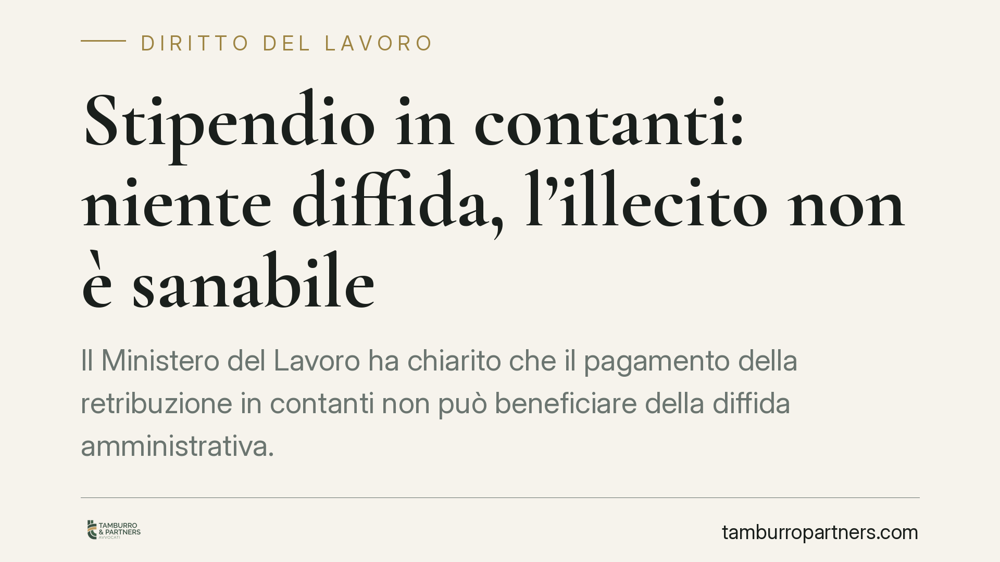

Stipendio in contanti: niente diffida, l'illecito non è sanabile
Il Ministero del Lavoro ha chiarito che il pagamento della retribuzione in contanti non può beneficiare della diffida amministrativa. Si tratta di un illecito istantaneo e non riparabile: una volta accertato, la sanzione si applica senza possibilità di sanatoria. Per i datori di lavoro significa che ogni mensilità irregolare resta esposta, con conseguenze economiche che crescono rapidamente in caso di più dipendenti.

Il chiarimento ministeriale
Con un recente orientamento in materia di interpello, il Ministero del Lavoro ha escluso la possibilità di applicare la diffida amministrativa al pagamento dello stipendio in contanti.
La diffida, prevista dall'art. 13 del D.lgs. 124/2004, consente al datore di regolarizzare la propria posizione entro un termine assegnato dall'ispettore, accedendo così a una sanzione in misura ridotta. È uno strumento pensato per gli illeciti "materialmente sanabili", cioè quelli che possono essere riparati con una condotta successiva.
Il pagamento della retribuzione in contanti, secondo l'orientamento ministeriale, non rientra in questa categoria.
Perché l'illecito non è diffidabile
L'obbligo di tracciabilità della retribuzione è stato introdotto dall'art. 1, comma 910, della L. 205/2017 (legge di bilancio 2018). La norma vieta al datore di corrispondere la retribuzione in contanti, imponendo strumenti tracciabili come bonifico, assegno o pagamento presso lo sportello bancario. Il comma 912 ha definito le modalità operative e ha fissato la decorrenza dell'obbligo al 1° luglio 2018. Il comma 913 disciplina l'apparato sanzionatorio per la violazione del comma 910.
Il punto centrale è di qualificazione giuridica. Il pagamento in contanti è un illecito istantaneo: si perfeziona e si esaurisce nel momento stesso in cui la retribuzione viene erogata fuori dai canali tracciabili. Non esiste una condotta successiva capace di "riportare indietro" quel pagamento. Un bonifico effettuato dopo l'accertamento non elimina il fatto che quella mensilità sia stata già pagata in contanti.
Manca quindi il presupposto logico della diffida: non c'è nulla da regolarizzare, perché l'illecito è già consumato in modo irreversibile.
L'importo della sanzione
La misura edittale della sanzione va sempre riscontrata con quella vigente al momento dell'accertamento, poiché gli importi possono essere stati aggiornati rispetto alla forbice originaria.
In via esemplificativa, assumendo una cornice edittale da 1.000 a 5.000 euro, l'importo in misura ridotta ex art. 16 della L. 689/1981 si attesta attorno ai 1.666,67 euro. Si tratta di un valore indicativo: va sempre ricalcolato sulla base della sanzione effettivamente applicabile.
Il dato da trattenere non è la cifra puntuale, ma il meccanismo di cumulo. La sanzione si applica per ogni mensilità irregolare e per ogni lavoratore. Tre dipendenti pagati in contanti per quattro mesi generano dodici violazioni autonome, con un esborso che si moltiplica di conseguenza.
Due equivoci da sgomberare
Primo: la firma in busta paga non prova il pagamento. La sottoscrizione del cedolino attesta la ricezione del documento, non l'avvenuto trasferimento del denaro. In sede di verifica, in assenza di tracciamento bancario, quella firma non è sufficiente a dimostrare la regolarità.
Secondo: il consenso del lavoratore è irrilevante. Anche se il dipendente chiede espressamente di essere pagato in contanti, il divieto resta violato. L'obbligo di tracciabilità tutela un interesse pubblico — la trasparenza dei rapporti di lavoro e il contrasto all'evasione — che non è nella disponibilità delle parti.
Cosa fare in concreto
- Verificare che tutte le retribuzioni, comprese anticipi e competenze accessorie, transitino su strumenti tracciabili.
- Conservare le evidenze bancarie dei pagamenti, che costituiscono l'unica prova spendibile in sede ispettiva.
- Non fare affidamento sulla firma del cedolino come prova dell'avvenuto pagamento.
- Rivedere le posizioni pregresse: è opportuno sottoporre a revisione i periodi in cui il tracciamento potrebbe essere mancato, valutando l'esposizione complessiva.
- Formalizzare le modalità di pagamento nelle procedure interne, in modo da intercettare eventuali prassi irregolari prima di un accertamento.
La non diffidabilità sposta il baricentro dalla sanabilità alla prevenzione: una volta accertato, l'illecito non ammette correttivi. L'unica difesa efficace è a monte.
Ogni storia di lavoro ha i suoi tempi.
Se gestisci HR e vuoi un confronto su contenzioso, ispezioni o licenziamenti, scrivi allo studio. Ti rispondiamo entro un giorno lavorativo.